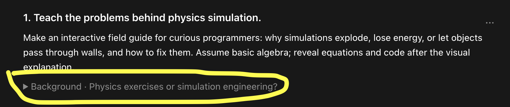

A skill for your coding agent
/lplan
Less reading.
Better decisions.
Align on what to build before the agent starts coding. Get a recommendation, with the reasoning there when you need it.
Install lplanThe idea
Recommendations first.
Background in a foldout.
1. Publish the slides from their existing repository.
Background · Why not copy them into the website?
The deck already works. GitHub Pages can publish it directly, and future pushes update the site automatically.
Alternatives
A. Copy the slides into the personal website repository.
B. Use a separate hosting provider.
An example proposal. Open the background if you want the rationale and alternatives.
Reading questions and four options, only to pick the recommendation again, gets tiring. lplan puts the recommended answer first. You decide how much background to read.
Keep the conversation short
You can just say 3b.
That means: accept proposals 1 and 2, choose alternative B for proposal 3, and assume you haven’t read 4, 5, or 6 yet.
In a real conversation
The detail stays out of the way.

Try it
Install once. Then ask for an lplan.
Run this in your terminal and choose the agent you use.
npx skills add lucasmeijer/lucas-skills --skill lplanThen type /lplan with what you want to build. The agent researches your codebase and proposes the decisions to make, starting with the ones that could change the rest of the plan.
Inline foldouts depend on your agent’s rendering support. The skill includes a separate HTML view for agents that can’t display them inline.
Read the skill and make it your own